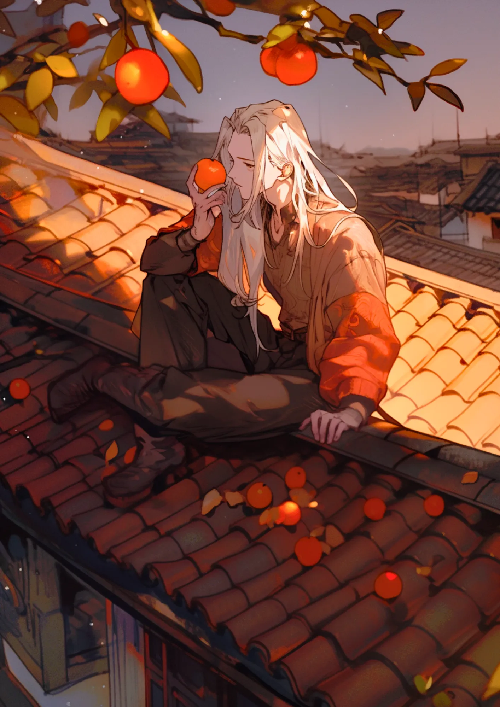
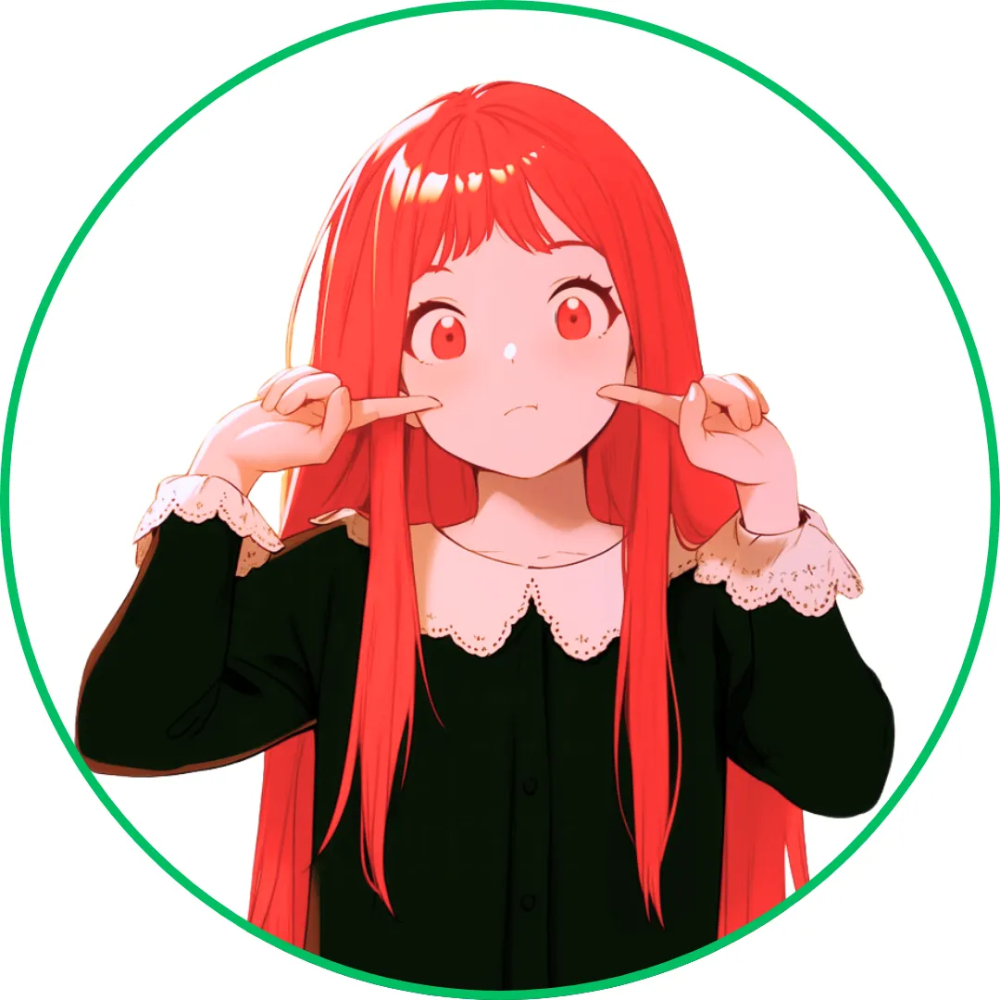
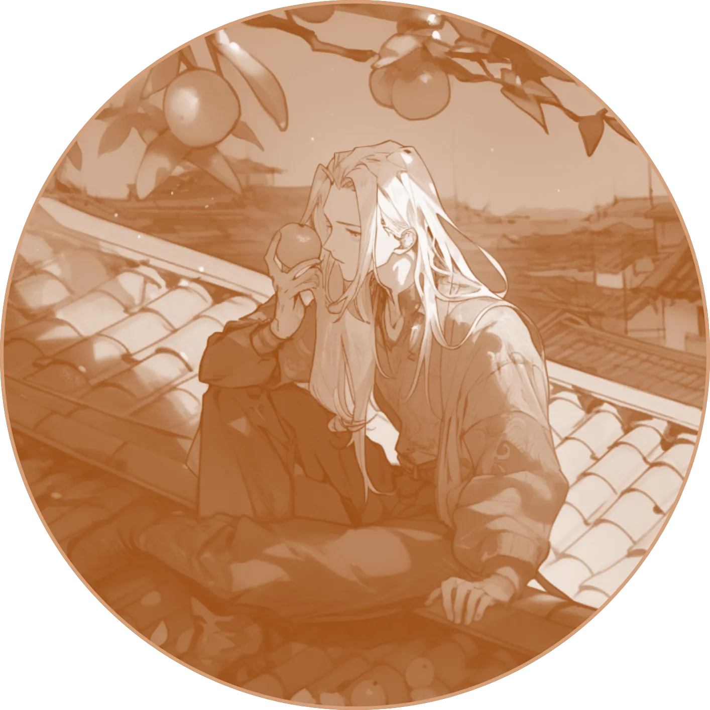
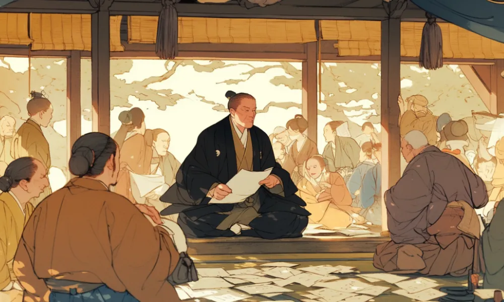

正岡子規
病床の歌よみ
 病弱な体
肺結核だった子規は寝たきりな時も多かったらしいわ……。
柿食へば？
鐘が鳴るなり 法隆寺 だろ？景色か浮かんでくるぜ。
[人物プロフィール]
生没年
1867年～1902年
時代
明治時代
身分
芸術家・俳人
久しぶりに野球がしたいな……

正岡子規ってどんなひと？
正岡子規は明治時代の俳人なんだけど、俳句だけじゃなくて小説や、俳句を書くためのコツを書いた本なんかも出しているんだ。肺結核に苦しみながらも、大好きな俳句を作って世に送っていたんだ。
コラム
（カード右上）柿くへば 鐘が鳴るなり 法隆寺
カードの効果解説！
獺祭書屋俳話
獺祭書屋俳話は、子規がまだ元気だった頃に書いた本で、新しい時代に合った俳句とはどんなものかを書いているんだ。獺祭というのはカワウソが捕まえた獲物を川原に並べることが由来なんだよ。
歌よみに与ふる書
歌よみに与ふる書は、それまで俳句を新しくするために活動してきた子規が、今度は短歌を時代に合ったものにしようとして書いたものよ。古今集じゃなくて万葉集のような歌を作るべきだと訴えたの。
クイズ！：正岡子規が好きだったスポーツはなんでしょう？